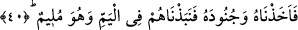

Mûsâ (a.s)’ın elinden zuhûr eden, tabîata aykırı mûcizeleri cinlerin yaptığını sanmış ve
bunu öne sürmüştür. O meydana gelen bu mû’cizatın Musa (a.s)’ın ihtiyarı ve gayreti ile
mi, yoksa bunlar olmaksızın mı meydana geldiğinde de tereddüd etmiştir.
Ebû Ubeyde âyetteki “ev” atıf edatının vâv mânâsında olduğunu ileri sürmüştür. Buna
delil olarak da Firavun ve yandaşlarının, Musa (a.s)’yı “büyücü” veya “cinli” diyerek
biriyle değil de her ikisine birden nispet ettiklerini göstermiştir. Nitekim “Yunus’u yüz
bin insana veya daha fazla olanlara elçi gönderdik” (es-Saffât 37/147) âyetinde de
“ev” edatı “vav” anlamında kullanılmıştır.
Muhakkiklere göre, Firavun’un Mûsa (a.s)’ı bu şekilde ta’n etmesi onun cehaletinin
kemâlini gösterir. Çünkü onu iki zıd şey ile birlikte ta’n etmiştir. Bilinir ki sihirbazlık
için tam bir akıl, işleyen bir zihin ve büyük bir ustalık gerekir. Oysa delilik/divanelik
aklın zevalidir. Aklın kemâli ile zevâli birbirinin zıddıdır.
40. Nihâyet onu da ordularını da yakalayıp denize attık, bu sırada kendini kınayıp
duruyordu.
Nebz, bir şeyi, kendisine verilen az önem sebebiyle kaldırıp atmaktır. Yâni, nasıl bir
kimse eline aldığı çakıl taşlarının yok olmasına aldırış etmeden denizin içine atıyorsa,
biz de onları, silah ve sair tüm ağırlıklarıyla beraber Kızıldeniz’in içerisine attık.
“O, boğulurken pişmanlıkla kendi kendini kınıyordu.” Yâni biz Firavun’u, küçük-
büyük her türlü günahına pişmanlık içerisinde, kendi kendini kınar vaziyette iken
yakaladık. Zira her günah sâhibi, mutlaka günahı miktarınca pişmanlık duyup kendi
kendini kınar.
Kâşifî şöyle demiştir: “Mülîm” melâmeti hak eden veya “Musâ (a.s)’dan neden yüz
çevirdim ve onu neden ta’n ettim” diye kendisini kınaması demektir. Bu sebepledir ki
Firavun boğulurken îman ettiğini bildirmiştir. (bk. Yunus 10/90)
Doğru bildiğin faydalı sözü,
Kimse beğenmese bile söyle.
Bugün beğenmeyen yarın pişmanlıkla,
O hak sözü niye dinlemedim diye âh edecektir.
Bu âyette kalp Musa’sına işâret vardır. Çünkü Allah kalb Musa’sını bir hüccet yâni
apaçık olan kelime-i tevhîd asâsı ile nefis Firavun’una göndermiştir. Bu asânın
mûcizevî yönü de “Birden o, onların uydurduklarını yutmağa başladı” (eş-Şuarâ
26/45) âyetinde buyrulduğu üzere sihirbazların bâtılı hakla karıştırarak ortaya
koydukları sihirlerini ve nefis Firavun’un sıfatlarını yutmasıdır. Ama nefis Firavun’u bu